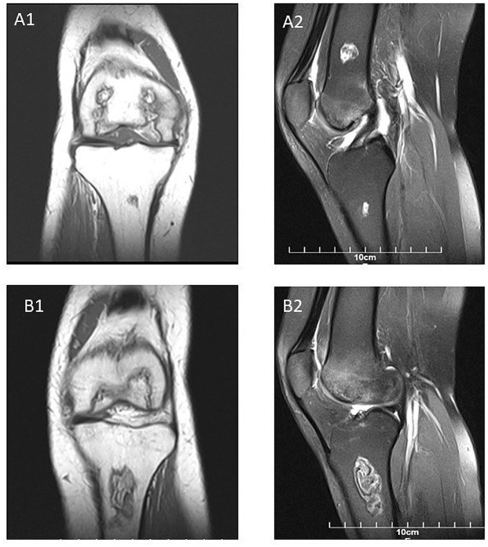
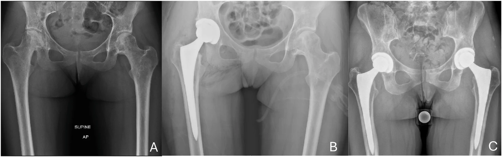
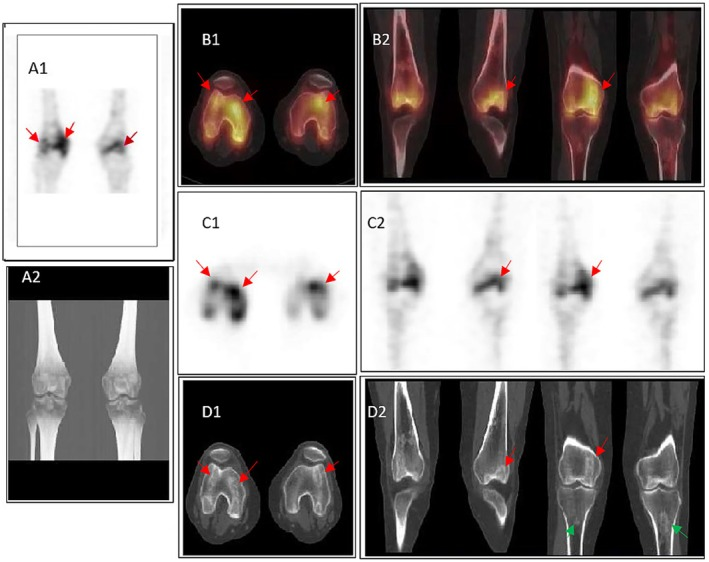

6105 — Hoại tử xương ở trẻ điều trị ALL: dấu "đường đôi" trên MRI, phân độ ARCO & ngưỡng can thiệp / Osteonecrosis in pediatric ALL
Tags: pattern:hoai-tu pattern:dau-khop vung:co-xuong vung:khop-goi vung:khop-hang score:ARCO protocol:MRI-khop protocol:MRI-toan-than incidentaloma:ton-thuong-sun-xuong
Mức chắc chắn (certainty): tổng hợp y văn (literature synthesis) + ca nguyên văn (verbatim case) — ca gối hai bên ở trẻ 17 tuổi ALL/AML sau ghép tế bào gốc (Haghighi F et al., Clin Case Rep 2026;14:e73212, PMC13482015) đối chiếu đoàn hệ quốc gia Áo 1.127 trẻ (Arnold K et al., EJHaem 2026;7:e70263, PMC13289583), đoàn hệ ANZCHOG (Padhye B et al., Cancer Med 2016;5:960–967, PMC4864825) và bài tổng quan điều trị theo bậc (Dermott M et al., J POSNA 2026;17:100460, PMC13682489).
Điểm chốt của bài: đau khớp ở trẻ đang điều trị ALL không được mặc định là "đau do corticoid". X-quang bình thường trong giai đoạn sớm (ARCO I); MRI là chuẩn chẩn đoán, và dấu "đường đôi" (double-line sign) + bờ ngoằn ngoèo (serpiginous) giảm tín hiệu T1 là chốt vào. Trẻ ≥ 10 tuổi có nguy cơ cao gấp hơn 10 lần, tổn thương đa ổ 70–85%, nên chụp cả bên đối diện và tìm ổ không triệu chứng.
1. Tổng quan — hoại tử xương hình thành thế nào và vì sao ALL là bối cảnh điển hình
- Định nghĩa: hoại tử xương (osteonecrosis — ON, còn gọi hoại tử vô mạch/avascular necrosis) là chết tế bào xương và tủy xương do thiếu máu cục bộ. Vùng chết không tự tái tạo; cơ thể phản ứng bằng mô hạt + xơ hóa + đặc xương quanh ổ chết → tạo ranh giới địa lý (geographic border). Đây là lý do hình ảnh không phải "một nốt mờ" mà là một vùng có bờ.
- TẠI SAO ở trẻ ALL — 4 cơ chế cộng dồn:
- Corticoid liều cao, kéo dài (dexamethasone 10 mg/m²/ngày × 21 ngày; prednisolone 60 mg/m²/ngày × 28 ngày): làm phì đại tế bào mỡ tủy → tăng áp lực trong xương, thuyên tắc mỡ, ức chế tạo xương và gây apoptosis tế bào xương → giảm vi tuần hoàn.
- L-asparaginase: tăng lipid máu và tăng đông, cộng hưởng với corticoid khi dùng đồng thời.
- Methotrexate: tăng homocysteine → tổn thương nội mạc, tắc vi mạch.
- Xạ trị vùng chịu lực > 20–35 Gy và các thuốc gây độc mạch khác.
- Vì sao đúng vị trí đó: ON thích đầu xương dài chịu lực — chỏm xương đùi, đầu dưới xương đùi, đầu trên xương chày, đầu trên xương cánh tay — nơi mạch máu tận cùng, ít tuần hoàn bàng hệ và chịu tải. Sụn khớp không có mạch nên không bị hoại tử trực tiếp, nhưng khi xương dưới sụn sụp → sụn mất chỗ tựa và thoái hóa thứ phát.
- Ngưỡng dịch tễ (số liệu phải nhớ):
- Đoàn hệ quốc gia Áo 1.127 trẻ điều trị AIEOP-BFM ALL 2000/2009: 73 ca ON có triệu chứng, nguy cơ tích lũy 5 năm 7% ± 1%; trung vị 1,64 năm từ chẩn đoán; 10–18 tuổi 22% ± 3% so với 1–9 tuổi 2% ± 0%; tuổi là yếu tố tiên đoán độc lập duy nhất (Arnold 2026, PMC13289583).
- Đoàn hệ ANZCHOG: 18/251 = 7,2%; > 10 tuổi 29%; trung vị 1,15 năm (0,25–2,12); 70% còn triệu chứng khi theo dõi cuối; 3 ca phải thay khớp (Padhye 2016, PMC4864825).
- Khi chụp MRI tầm soát có hệ thống, tỷ lệ ON tới ~72%; đa ổ 70–85%; ở tuổi ≥ 15 nguy cơ ~16% so với < 2% ở trẻ nhỏ (Dermott 2026, PMC13682489 — tổng hợp).
- 79% ca sẽ phát triển ON trong vòng 1 năm đầu sau khi bắt đầu corticoid; 17,7% trẻ > 10 tuổi có ON trên MRI protocol-driven vào cuối liệu trình (nghiên cứu St. Jude, dẫn trong Padhye 2016).
- Hậu quả dài hạn: ~50% còn triệu chứng sau 5 năm; trong số ON nặng, 67% phải thay khớp và 20% còn đau mạn (van Atteveld 2021, PMC8018109).
- Vì sao hình ảnh trông như vậy (vật lý + mô bệnh):
- T1W: mỡ tủy chết vẫn còn mỡ → vùng trung tâm sáng tương đối; bờ hoạt tính xơ/đặc xương giảm tín hiệu → bờ ngoằn ngoèo tối. Đây là "chữ ký" của ổ địa lý.
- STIR/T2 fat-sat: mỡ bị triệt → phù tủy quanh ổ sáng lên; lớp mô hạt trong bờ sáng, lớp xơ ngoài tối → đường đôi (double-line sign).
- X-quang: chỉ thấy đặc xương, dấu liềm (crescent sign), sụp/xẹp khi bệnh đã tiến triển — không loại trừ ON khi còn bình thường.
2. Mẫu hình + chẩn đoán phân biệt theo vị trí (Gamut)
- Mẫu hình A — ổ "địa lý" dưới sụn ở đầu xương chịu lực (một hoặc hai bên):
- ON do điều trị ALL (bài này): bờ ngoằn ngoèo T1, đường đôi trên STIR, trung tâm giữ tín hiệu mỡ, thường đối xứng/đa ổ.
- Gãy mỏi/xẹp do corticoid (insufficiency fracture): dải giảm tín hiệu thẳng, vuông góc với vỏ xương, không có trung tâm mỡ; vị trí kinh điển cổ xương đùi, đốt sống, xương cùng.
- Phù tủy xương thoáng qua (bone marrow edema syndrome — BMES): phù lan tỏa không có bờ địa lý, tự hồi phục; không có bờ T1 tối rõ.
- Viêm xương tủy cấp (osteomyelitis): sốt/đau khu trú, phù mô mềm, phá hủy vỏ, phản ứng màng xương, ổ áp-xe; không có "đường đôi".
- Thâm nhiễm tủy do bạch cầu/relapse: giảm tín hiệu T1 lan tỏa, không bờ, kèm hạch/gan lách; cần tủy đồ nếu nghi.
- CRMO (viêm xương tủy đa ổ tái diễn mạn): đa ổ, phản ứng màng xương, không có bờ địa lý điển hình; bệnh nhân thường đau + sưng, không đi khập khiễng đơn thuần.
- Mẫu hình B — đau gối đơn thuần ở trẻ ALL: nghĩ theo thứ tự ON (dưới sụn) → gãy mỏi → nhiễm trùng khớp/xương (trẻ giảm miễn dịch!) → thâm nhiễm/tái phát → CRMO/OCD. Viêm khớp nhiễm khuẩn ở trẻ giảm bạch cầu có thể không sốt rõ — không được bỏ qua dịch khớp.
- Mẫu hình C — đa ổ/bilat: ON do điều trị (70–85%), CRMO, di căn/tái phát, bệnh mô liên kết. Đa ổ + bối cảnh corticoid = ON cho đến khi chứng minh khác.
- Mnemonic "STEROID": Subchondral geographic (dưới sụn, có bờ) · T1 dark serpiginous rim (bờ tối ngoằn ngoèo) · Edema on STIR (phù quanh) · Relative central fat (trung tâm giữ mỡ) · Old steroid/high dose (tiền sử corticoid) · Infarct line/double line (đường đôi) · Distribution weight-bearing epiphysis (đầu xương chịu lực).
3. Bảng so sánh phân biệt (ma trận đối chiếu)
| Thực thể (entity) | Hình ảnh điển hình | Chốt vào (rule-in) | Chốt loại (rule-out) | Gợi ý xác nhận |
|---|---|---|---|---|
| ON do corticoid (ARCO I–II) | Ổ địa lý dưới sụn, bờ T1 tối ngoằn ngoèo, trung tâm giữ mỡ, đường đôi trên STIR | Bờ ngoằn ngoèo + đường đôi + bối cảnh corticoid | Bờ thẳng vuông góc vỏ + không có trung tâm mỡ → gãy mỏi; phù lan không bờ → BMES | MRI khớp (T1 + STIR), đối chiếu bên đối diện |
| Gãy mỏi / xẹp do corticoid | Dải giảm tín hiệu thẳng, phù tủy quanh, có thể đường gãy trên CT | Dải thẳng + vị trí chịu lực + không bờ địa lý | Có bờ ngoằn ngoèo + đường đôi → ON | MRI/CT; X-quang muộn mới thấy |
| BMES (phù tủy thoáng qua) | Phù tủy lan tỏa, không bờ, không sụp; hồi phục 6–12 tháng | Phù không bờ + tự giảm theo thời gian | Bờ T1 tối rõ + tổn thương dạng địa lý → ON | MRI lặp lại 3–6 tháng |
| Viêm xương tủy cấp | Phù tủy + phá hủy vỏ, phản ứng màng xương, phù mô mềm, áp-xe | Sốt/đau khu trú + phá vỏ + phù mô mềm | Vỏ nguyên vẹn, không phù mô mềm → ON | MRI + CRP/máu; chọc hút khi có ổ mủ |
| Thâm nhiễm tủy/tái phát bạch cầu | Giảm T1 lan tỏa, không bờ, tủy xương loang lổ, hạch/gan lách | Không bờ địa lý + bối cảnh huyết học | Có bờ địa lý + đường đôi → ON | Tủy đồ/PET-CT nếu nghi |
| CRMO | Đa ổ, phản ứng màng xương, phù tủy, không đường đôi | Đa ổ + màng xương + đau/sưng | Bờ địa lý + đường đôi + corticoid → ON | MRI toàn thân, loại trừ nhiễm trùng |
| OCD (loạn sản xương – sụn khớp gối) | Mảnh xương–sụn tách bờ ở vùng tiếp khớp, thường mặt trong lồi cầu đùi | Mảnh tách + sụn phủ + khớp gối thiếu niên | Tổn thương trong tủy, không liên quan mặt khớp → ON | MRI khớp gối (T2/PD) |

Ca 17 tuổi ALL/AML sau ghép tế bào gốc, đau gối tiến triển. A1 (T1W coronal gối phải): ổ địa lý ở lồi cầu đùi và đầu trên xương chày với bờ giảm tín hiệu ngoằn ngoèo, trung tâm còn tín hiệu mỡ. A2 (STIR sagittal): phù tủy và dấu đường đôi. B1/B2 gối trái: nhiều ổ địa lý, đường đôi rõ. Nguồn: Haghighi F et al., Clin Case Rep 2026;14:e73212 (PMC13482015, Fig. 1), CC BY 4.0.Ba dấu hiệu phải đọc thành tiếng khi soi MRI
- Bờ ngoằn ngoèo (serpiginous border) trên T1: chốt vị trí ổ chết; bờ càng dày, càng tối = phản ứng xơ/đặc xương càng mạnh.
- Đường đôi (double-line sign) trên T2/STIR: lớp trong sáng (mô hạt tái tạo) + lớp ngoài tối (xơ/đặc xương). Đây là dấu đặc hiệu nhất của ON, phân biệt với phù tủy đơn thuần.
- Dấu liềm (crescent sign) trên X-quang/CT: đường sáng dưới sụn = gãy xương dưới sụn, tức đã sang ARCO III — mốc chuyển từ "bảo tồn" sang "giữ khớp bằng phẫu thuật".
4. Protocol chụp + phân độ ARCO + sơ đồ xử trí
4.1 Protocol MRI — "một chuỗi xung, ba câu trả lời"
- Chuỗi xung tối thiểu: T1W không triệt mỡ (coronal) + STIR hoặc PD/T2 fat-sat (coronal + sagittal), lát 3–4 mm, FOV toàn khớp (gồm cả đầu xương đối diện).
- Không cần gadolinium để chẩn đoán ON; chỉ tiêm khi nghi nhiễm trùng/u.
- Chụp cả bên đối diện dù chỉ một bên đau: đa ổ 70–85%, và ổ bên kia thay đổi quyết định (bảo tồn hai bên vs can thiệp một bên).
- Khi nào mở rộng toàn thân: trẻ ≥ 10 tuổi có ON ở một ổ, đau nhiều vị trí, hoặc trước khi quyết định phẫu thuật → MRI toàn thân (T1 + STIR) nếu có; 18F-NaF PET/CT là lựa chọn thay thế ở trung tâm có điều kiện (vai trò tiên lượng chưa được chuẩn hóa).
- Thời điểm: MRI ngay khi có đau/khập khiễng — không chờ hết liệu trình. Ở nhóm nguy cơ cao, cân nhắc MRI tầm soát cuối giai đoạn induction/reinduction (chưa có đồng thuận; 79% ca ON xuất hiện trong năm đầu).
- Theo dõi: lâm sàng + MRI lặp mỗi 3–6 tháng giai đoạn đầu, sau đó giãn ra; chụp lại ngay khi đau tăng hoặc có triệu chứng cơ học.
- X-quang: chụp nền và theo dõi — nhưng X-quang bình thường KHÔNG loại trừ ON (ARCO I).
4.2 Phân độ ARCO 2019 (bảng gốc cho chỏm xương đùi; áp dụng cho khớp khác là ngoại suy có kiểm soát)
| ARCO | X-quang | MRI | Ý nghĩa điều trị |
|---|---|---|---|
| I | Bình thường | Bất thường tín hiệu tủy (T1 thấp, T2/STIR cao), chưa biến dạng | Còn hồi phục — bảo tồn, theo dõi sát |
| II | Đặc xương/kyst, chưa sụp | Ổ giới hạn rõ, đường viền khớp còn nguyên | Trước sụp — cân nhắc khoan giải áp nếu có triệu chứng |
| III | Dấu liềm, sụp dưới sụn, chưa dẹt | Gãy xương dưới sụn, đường viền khớp bắt đầu hỏng | Nguy cơ tiến triển cao — giữ khớp: ghép xương/osteotomy |
| IV | Mặt khớp dẹt, thoái hóa thứ phát | Xác nhận sụp + thoái hóa | Thay khớp khi triệu chứng nặng |
- Ngưỡng tiên lượng sụp khớp: tổn thương > 30% diện tích và sát mặt khớp → nguy cơ sụp/thay khớp cao (Padhye 2016). Đây là lý do phải đo diện tích và khoảng cách tới mặt khớp trong báo cáo, không chỉ ghi "có ON".
- Điều trị theo bậc:
- ARCO I–II: giảm tải/đai hỗ trợ, vật lý trị liệu, giảm liều corticoid nếu phác đồ cho phép (phối hợp huyết học — không tự ngừng); bisphosphonate (zoledronic acid) có bằng chứng tốt nhất về giảm đau/chức năng nhưng chưa chứng minh ngăn sụp; khoan giải áp (core decompression) khi đau dai dẳng/tổn thương tiến triển, chủ yếu ở chỏm xương đùi.
- ARCO III: phẫu thuật giữ khớp (ghép xương mác mạch máu, osteochondral autograft/allograft, osteotomy) — chọn theo vị trí, kích thước, sụn còn lại và mức trưởng thành xương.
- ARCO IV: thay khớp; ở trẻ cần cân nhắc tuổi, còn lớn và khả năng thay lại.
- Bằng chứng yếu cần nói rõ với gia đình: khoan giải áp chưa được chứng minh giảm nguy cơ sụp trong tổng quan; bisphosphonate chủ yếu giảm đau. Đừng hứa "mổ là khỏi".
flowchart TD
A["Trẻ ALL đau khớp/khập khiễng"] --> B["MRI khớp: T1W + STIR<br/>chụp CẢ bên đối diện"]
B --> C{"Có bờ ngoằn ngoèo T1<br/>+ đường đôi STIR?"}
C -->|Không| D["Nghĩ gãy mỏi, BMES, nhiễm trùng,<br/>tái phát — chẩn đoán theo hàng DDx"]
C -->|Có| E["ON — phân độ ARCO"]
E --> F{"ARCO I-II?"}
F -->|Có| G["Giảm tải + PT + giảm corticoid nếu được<br/>bisphosphonate nếu đa ổ/đau"]
G --> H{"Đau dai dẳng, tổn thương tiến triển,<br/>> 30% diện tích sát mặt khớp?"}
H -->|Có| I["Khoan giải áp ± ghép<br/>ở chỏm xương đùi"]
H -->|Không| J["MRI lại 3-6 tháng"]
F -->|Không| K{"ARCO III?"}
K -->|Có| L["Giữ khớp: ghép xương/osteotomy"]
K -->|Không| M["ARCO IV: thay khớp khi triệu chứng nặng"]
I --> N["Phối hợp huyết học + PHCN"]
L --> N
M --> N
5. Biến thể bình thường & cạm bẫy
- Cạm bẫy 1 — "X-quang bình thường nên không phải ON". Trong đoàn hệ ANZCHOG, 83% ca lúc chẩn đoán ON chỉ có ARCO I–II trên X-quang (15/18 ca). Ở ARCO I, X-quang hoàn toàn bình thường; chỉ MRI mới thấy.
- Cạm bẫy 2 — quy đau khớp cho "đau do corticoid/giai đoạn tăng trưởng". Đau do corticoid là đau cơ, không có điểm đau xương, không khập khiễng; ON đau khi chịu tải, giảm khi nghỉ. Trẻ ≥ 10 tuổi đau gối/đau háng phải chụp MRI — đừng chờ.
- Cạm bẫy 3 — bỏ sót ổ đối bên. 70–85% đa ổ; ổ bên kia có thể không triệu chứng nhưng quyết định chiến lược (theo dõi, can thiệp sớm, thay đổi phác đồ).
- Cạm bẫy 4 — tưởng đặc xương trên X-quang là "lành". Đặc xương sau 5 tháng chỉ là sửa chữa/xơ hóa, không chứng minh khỏi và không loại trừ tiến triển (ca Fig. 4, PMC13482015). Phải đối chiếu MRI.
- Cạm bẫy 5 — tủy đỏ sinh lý ở trẻ. Tủy đỏ đối xứng, T1 hơi sáng hơn cơ/đĩa đệm, không có bờ địa lý, không phù trên STIR. Áp dụng học thuyết tín hiệu tủy: thay thế tủy thật = T1 tối hơn cơ/đĩa; tủy đỏ không phải ON.
- Cạm bẫy 6 — sụn tăng trưởng (physis). Đường sụn tăng trưởng sáng trên T2, tối trên T1, chạy ngang đối xứng; đừng đọc thành "dải hoại tử". Ổ ON nằm trong đầu xương (epiphysis) hoặc sát mặt khớp, không trùng physis.
- Cạm bẫy 7 — coi SPECT/CT/xạ hình là "chốt mức độ". Ca dưới đây cho thấy hoạt tính lệch nhau giữa đùi và chày; xạ hình phản ánh chuyển hóa sửa chữa, không thay thế MRI để phân độ ARCO.
- Cạm bẫy 8 — tự ngừng corticoid. Giảm liều chỉ khi phác đồ ung thư cho phép và có bàn với huyết học; ngừng đột ngột có thể làm bệnh nền bùng phát.

Ca 18 tuổi ALL nguy cơ rất cao, dùng corticoid kéo dài. A: ON chỏm xương đùi hai bên, sụp xương dưới sụn bên phải. B: thay khớp háng phải. C: thay khớp háng hai bên. Đây là ARCO IV — minh họa vì sao phải bắt ON trước khi sụp. Nguồn: Dermott M et al., J POSNA 2026;17:100460 (PMC13682489, Fig. 3), CC BY-NC-ND 4.0 — nguyên bản, không chỉnh sửa.6. Tự lượng giá — Blind Quiz
Ca 1 — Trẻ 17 tuổi ALL sau ghép, đau gối hai bên. MRI đã xác định ON. Xạ hình SPECT/CT được chụp thêm.

- Hỏi: vì sao lồi cầu đùi ngấm mạnh còn tổn thương xương chày ngấm rất ít? Điều này có làm thay đổi phân độ ARCO hay chỉ định mổ không?
Bấm để hiện đáp án
- Ngấm mạnh ở lồi cầu đùi tương ứng đặc xương rõ trên CT — vùng đang sửa chữa/tái tạo mạnh; xương chày ngấm ít dù có ổ ON và đặc xương nhẹ → hoạt tính không đồng nhất giữa các ổ, có thể do giai đoạn sửa chữa khác nhau.
- Không dùng xạ hình để phân độ ARCO hay quyết định mổ: ARCO dựa trên MRI/X-quang (cấu trúc, sụp). SPECT/CT chỉ là thông tin bổ sung về hoạt tính; vai trò tiên lượng sụp chưa được chuẩn hóa.
- Nguồn: Haghighi F et al., Clin Case Rep 2026;14:e73212 (PMC13482015), CC BY 4.0.
Ca 2 — Trẻ 15 tuổi ALL, 3 tuần sau đợt dexamethasone, đau gối phải khi đi lại, X-quang bình thường.
- Hỏi: bước tiếp theo? Có được kết luận "đau do corticoid" và theo dõi không?
Bấm để hiện đáp án
- Chụp MRI khớp gối NGAY (T1W + STIR), cả gối trái; nếu đau háng thì chụp thêm khớp háng.
- Không kết luận đau do corticoid: X-quang bình thường là bình thường ở ARCO I, và 79% ca ON xuất hiện trong năm đầu corticoid; tuổi 15 thuộc nhóm nguy cơ cao nhất (22% ở 10–18 tuổi).
- Nếu MRI âm mà đau dai dẳng: MRI lặp lại 3–6 tháng, tìm gãy mỏi/nhiễm trùng/tái phát; cân nhắc MRI toàn thân.
Ca 3 — Trẻ 12 tuổi, ON chỏm xương đùi ARCO II, tổn thương 35% diện tích, sát mặt khớp, đau khi đi lại.
- Hỏi: chọn theo dõi đơn thuần, khoan giải áp, hay thay khớp? Cần nói gì với gia đình về bằng chứng?
Bấm để hiện đáp án
- Trước sụp (ARCO II) + có triệu chứng + > 30% diện tích, sát mặt khớp → phẫu thuật giữ khớp, thường khoan giải áp ở chỏm xương đùi ± ghép; kèm giảm tải, vật lý trị liệu, và bàn với huyết học về giảm liều corticoid nếu phác đồ cho phép.
- Không thay khớp (chỉ ARCO IV); không chỉ theo dõi đơn thuần vì nguy cơ sụp cao.
- Nói rõ giới hạn bằng chứng: khoan giải áp chủ yếu giảm đau/cải thiện chức năng, chưa chứng minh ngăn sụp; bisphosphonate giảm đau nhưng không phải điều trị triệt để. Tiên lượng phụ thuộc kích thước, vị trí và sụp mặt khớp.
Bài liên quan chéo
- 300 – Tổng quan Hệ Cơ – Xương – Khớp (học thuyết vùng chuyển tiếp + tín hiệu tủy)
- 361 – MRI khớp háng: AVN, ARCO/Ficat, FAI (phân độ và đọc ổ chỏm xương đùi)
- 684 – Tăng triglyceride do asparaginase ở trẻ ALL (TG độ 3/4 → ON OR 4,27; vì sao phải tìm ON khi đau khớp)
- 511 – Đau cơ–khớp do thuốc ức chế aromatase & sức khỏe xương (đau khớp do thuốc ở người lớn — đối chiếu)
- 640 – Khớp háng nhi: DDH, Perthes, SCFE (chẩn đoán phân biệt đau háng ở trẻ)
- 370 – Nhiễm trùng cơ xương khớp (viêm xương tủy — hàng DDx sốt/đau xương)
Không dùng để chẩn đoán độc lập khi chưa có người hướng dẫn.